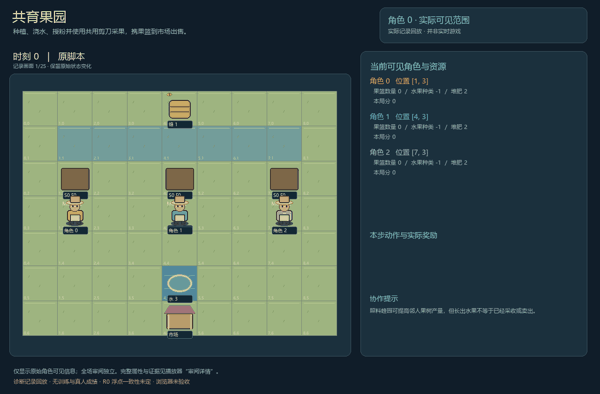
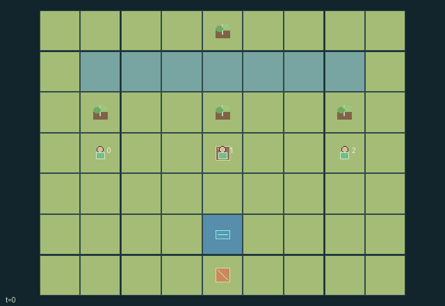

GI192 · Orchard Commons

Original recording scope: 角色0实际可见视角 · Mode: 实际诊断回放
Additional generated state replay (different trajectory / full-state debug)

Grow and sell orchard fruit through six growth ticks. Coordinate scarce water, pollinating habitat and one shared pruning tool while choosing crops for private tastes and alternating market demand.
Identity and original contract
3 independently actionable roles; 14 discrete commands per role; 50 native observation columns per role; original horizon 40 steps. Declared per-step reward range: 0 to 9. Observation regime: partially_observable.
Source SHA-256: f3607de1a9dd1c045b8fb3ad0079b5121d44f5acc6ee1b1e1fb55ab97df263fb
The objective, rewards, population, map and horizon remain original. A preview is not a success claim.
Objective and gameplay
Grow and sell orchard fruit through six growth ticks. Coordinate scarce water, pollinating habitat and one shared pruning tool while choosing crops for private tastes and alternating market demand.
Farmers move to owned plots, neighboring plots, bee meadow, tool or market. Watering spends a common renewable reservoir; habitat tending changes later yields on other plots; the unique shears control who can harvest before spoilage.
- Walk an orchard keeper to a plot, meadow, pruning tool or market. Plant apples or pears within one cell of your own bare plot.
- Water an adjacent growing plot using 1 pond water to add up to 2 moisture. Anyone may water another farmer plot; the pond refills by 2 on growth ticks, capped at 4.
- Every fourth step, moist seedlings blossom and moist blossoms ripen. Growth consumes 1 moisture. There are six growth ticks.
- Tend the bee meadow to add up to 2 habitat. Habitat of at least 2 when blossoms open stores a pollen flag; habitat falls by 1 each growth tick.
- Ripe yield is 1 fruit, plus 1 for captured pollen, plus 1 for soil at least 2. Compost restores soil; the last harvest from a plot reduces it by 1.
- Only the farmer holding the shared pruning shears can harvest their own ripe plot. Carry at most 3 fruit of one type.
- Pass shears to an adjacent farmer with the lowest role index; with nobody adjacent, place them on the ground. Their visible position and holder follow real state.
- Fruit left ripe for two later growth ticks spoils. At the market, sell your basket for favorite and alternating-season bonuses.
- Show textured trees, blossom, fruit, water channels, bees, baskets and the tool strap from these native fields. Human play accepts any legal actions.
- Favorites are private. Scripts describe intended checks only; no replay, learning or successful harvest has been executed by the author.
Ending: After six growth ticks, natural completion requires no ripe plots and no carried fruit. Unpicked ripe fruit can spoil on later four-step ticks. Otherwise H=40 with natural priority.
What this game explores
Information, sensing & communication: Who knows a fact, when it was measured, and whether it was communicated are separate state variables. Test memory or communication using only the same role-visible evidence.
Resource commons & externalities: An action changes a persistent resource or burden that another role also encounters. Compare extraction with maintenance and record the downstream resource trajectory.
Complementary production & service: A useful outcome requires ordered stages, scarce equipment or another role's capability. Measure real completed products and resource circulation rather than counting intermediate actions as success.
These are questions supported by rule structure, not observed learning effects.
Play it: operating walkthrough
crucibles play --game gi192Keep Python running and open its printed address. Select this game, set a seed and press Create session. The game itself is always English.
Assign a role range to Host with Assign / take over, or Assign all roles. Invite a second participant with Create player invitation, then assign a disjoint subset. Every original role is available.
For every owned role choose a legal command and press Queue. Arrow keys / WASD queue a declared directional action for the current role camera when available. Space or Advance one joint step advances everyone together. Non-directional games use the selectors.
Unqueued roles use the labelled untrained uniform-legal policy. Take over or release roles before the next step without resetting. Full-state debug is privileged and permanently logged; role cameras preserve permissions. Close the session to retain logs. Server restart does not restore sessions.
Complete command reference
IDs and English labels exactly match the manifest. Availability depends on role, resources, location and phase. An available action can still have no productive effect.
0·Wait
1·Walk north
2·Walk east
3·Walk south
4·Walk west
5·Plant apple at own empty plot
6·Plant pear at own empty plot
7·Water nearest adjacent growing plot: 1 shared water
8·Tend adjacent bee meadow: add up to 2 habitat
9·Pick up nearby unheld pruning tool
10·Pass tool to adjacent lowest-index farmer, or put down
11·Harvest own ripe plot with pruning tool
12·Sell whole basket at market
13·Compost nearest adjacent plot: 1 own compost
Roles and capability identifiers
These original role names describe capabilities, not interchangeable skins. Check each owned role's legal selector before planning handoffs.
agent_0·Western orchard keeper
agent_1·Central orchard keeper
agent_2·Eastern orchard keeper
Information and observation permissions
Static map, actual farmer/tool positions, crops, moisture, soil, pollen, fruit, shared reserves and baskets are public. Each role alone receives its favorite fruit bit. No renderer may show other favorites.
The GIF is full-state debug and may reveal hidden entities or private state. Train on obs[agent], not the picture, state tree or another role's private row. Field slices and visibility are in the original manifest.
Reinforcement-learning integration
import jax
from crucibles_jaxmarl import make
env = make("gi192")
key = jax.random.PRNGKey(0)
key, rk, ak, sk = jax.random.split(key, 4)
obs, state = jax.jit(env.reset)(rk)
actions = env.sample_actions(ak, state)
obs, state, rewards, dones, info = jax.jit(env.step_env)(sk, state, actions)
done = dones["__all__"]Observations are float32 vectors of width 50; actions are scalar int32; masks have 14 entries. Supply all 3 roles each transition. Masked sampling is an engineering reference, not a trained learner.
step_env retains terminal data without reset. step performs outer autoreset and keeps terminal data in info["raw_state"] and info["raw_observation"]. Use dones["__all__"] for episode boundaries; separate completion, failure and time limit in analysis.
JIT or vmap equal identities and shapes. Split independent reset, policy and transition keys. Group different shapes explicitly; do not shrink the population or horizon. Host rendering stays outside training.
Training questions and fair evaluation
Define valid completion from the objective before fitting. Preserve original rewards and also report real deliveries/services, losses, resource state, unresolved episodes and per-role returns. Animation is not a reward signal.
Who knows a fact, when it was measured, and whether it was communicated are separate state variables. Test memory or communication using only the same role-visible evidence.
An action changes a persistent resource or burden that another role also encounters. Compare extraction with maintenance and record the downstream resource trajectory.
A useful outcome requires ordered stages, scarce equipment or another role's capability. Measure real completed products and resource circulation rather than counting intermediate actions as success.
Compare memory, communication or centralized critics under matched actor information. Declare critic access; keep actor inputs role-filtered. Match partner/opponent distributions, masks, compute and checkpoint selection. Final tests never enter fitting or selection.
Independent training runs or source-pairing blocks are inferential units; episodes from one policy are not independent training replications. Save hashes, keys, versions, device, time and cost. Negative, zero, failed and indeterminate outcomes are valid. No trained checkpoint or target score is supplied.
Classification and evidence
Overlapping editorial labels are reading aids, not proof of novelty, difficulty, strategic equivalence or learning effects.
- Information, sensing & communication
- Evidence
manifest.task.objective: Grow and sell orchard fruit through six growth ticks. Coordinate scarce water, pollinating habitat and one shared pruning tool while choosing crops for private tastes and alternating market demand.
- Evidence
scene.rules.9: Favorites are private. Scripts describe intended checks only; no replay, learning or successful harvest has been executed by the author.
- Resource commons & externalities
- Evidence
manifest.task.objective: Grow and sell orchard fruit through six growth ticks. Coordinate scarce water, pollinating habitat and one shared pruning tool while choosing crops for private tastes and alternating market demand.
- Evidence
manifest.task.interaction: Farmers move to owned plots, neighboring plots, bee meadow, tool or market. Watering spends a common renewable reservoir; habitat tending changes later yields on other plots; the unique shears control who can harvest before spoilage.
- Evidence
manifest.task.observation_access: Static map, actual farmer/tool positions, crops, moisture, soil, pollen, fruit, shared reserves and baskets are public. Each role alone receives its favorite fruit bit. No renderer may show other favorites.
- Complementary production & service
- Evidence
manifest.task.objective: Grow and sell orchard fruit through six growth ticks. Coordinate scarce water, pollinating habitat and one shared pruning tool while choosing crops for private tastes and alternating market demand.
Source, receipts and preview limits
The additional generated state GIF replays saved untrained legal actions through the original kernel. At most 25 actual endpoints include initial and terminal state; no invented interpolation. It is full-state debug, not the role observation. Where an original scene preview exists, it is displayed first with its own recorded information scope. The two recordings may use different trajectories and views.
Original source, observation slices, manifest and mechanism
Native receipt · Presentation receipt
Engineering passes do not establish learning. Nonzero floating differences remain recorded and undetermined; no new tolerance was introduced. Human scores remain unverified.